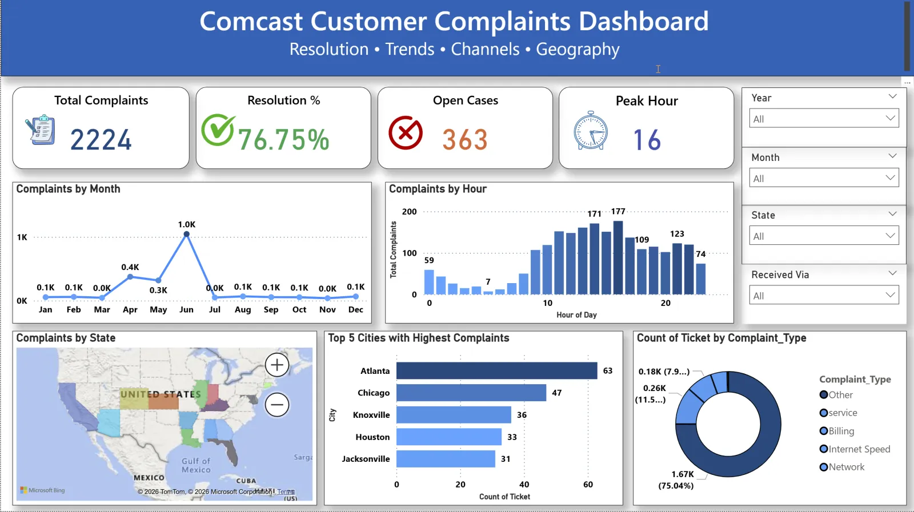
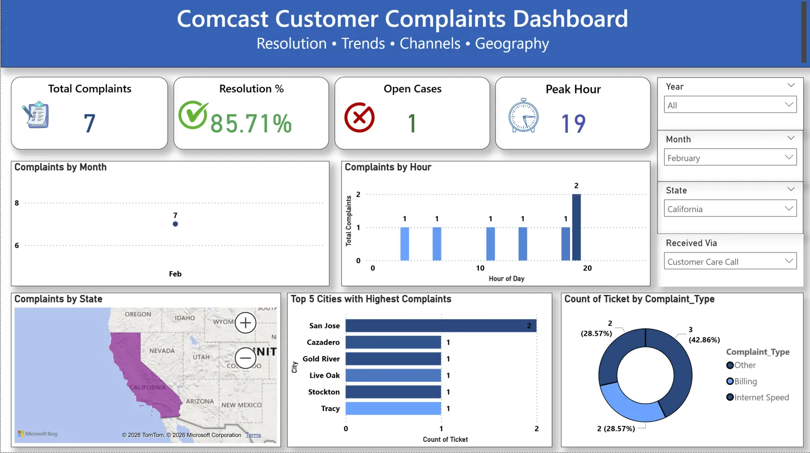

Operations · SQL / Power BI
Customer Service MIS
SQL analysis of 2,224 customer complaints to find recurring SLA delays, with a Power BI dashboard for weekly monitoring.
- LiveInteractive dashboard · rebuilt from the dataset
- ScreenshotPower BI & SQL screenshots
- CodeFiles on GitHub
- Complaints
- 2,224
- Analysis
- SQL (MySQL)
- Dashboard
- Power BI · DAX
- Focus
- Resolution, peaks, hotspots
Lots of complaints, very little signal.
Source: READMEOrganisations often collect large volumes of customer complaint data but struggle to extract meaningful insights from it. This project turns raw complaint records into an executive-friendly dashboard for faster, smarter decisions.
The analysis looks at complaint trends, operational efficiency and the regions that need service improvements.
What it set out to answer.
Source: READMEVolume & resolution
Total complaint volume and resolution performance.
Peak hours
When complaints peak, for workforce planning.
Hotspots
Which regions have the highest complaint density.
Categories
The major complaint categories.
Exploration
An interactive dashboard to explore it all.
From SQL to a dashboard.
Source: README- 01
Explore with SQL
MySQL queries for complaint count by state, resolution rate, peak complaint hour and complaint-type distribution.
- 02
Model in Power BI
Data cleaning and modelling, with DAX measures for the KPIs.
- 03
Design the dashboard
KPI cards (total complaints, resolution %, open cases, peak hour), monthly and hourly trends, a hotspot map, top cities, complaint types and filters.
Explore the complaints.
Loading the interactive dashboard…
The Power BI dashboard.

The same report, filtered.

Findings.
- 76.75%
of the 2,224 complaints were resolved (Solved or Closed); 363 are still open and 154 pending.
- 57.6%
of all complaints arrived in June 2015 (1,280). The 23–25 June spike alone holds 506 (22.75%).
- 98% → 69%
Resolution fell from 97.98% for April complaints to 73.43% in May and 68.75% in June; 272 of the 363 open cases are from June.
- 16:00
is the peak hour (177 complaints); 88.4% arrive between 09:00 and midnight.
- Georgia
leads with 288 complaints (12.95%), then Florida (240) and California (220): a third of all complaints across 42 states.
- 50 / 50
Calls (1,119) and online complaints (1,105) split almost evenly, with nearly the same resolution rate (77.2% vs 76.3%).
Computed from Comcast.xlsx in the project repository, with the day/month swap corrected (see the note under the dashboard).